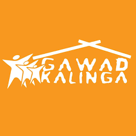

|  |
Their mission is simple, “Ending poverty for 5 million families by 2024”. A straightforward line that speaks a thousand depths. Behind it is the complexity of how to tackle such a big commitment. But Gawad Kalinga also has a straightforward and simple answer: a desire to give care and leave no one behind. Along with it is their journey, their experiences and learnings that they have gained, starting from a simple desire to implementing projects that are slowly making their mission a reality. Visit Gawad Kalinga and learn more insightful definitions of the values they stand for. It also provides information on how you, and everyone who shares the same interest, can join in their cause. And, finally find yourself volunteering in the Philippines. |

|
Ivolunteer is a portal made by volunteers for volunteers. Propelled by the mission of promoting volunteerism by making it known, making it easy and making it happen, it serves as a bridge between the volunteers and the organisations seeking volunteers. Are you someone looking to put your time and effort into a good cause in either long-term or short-term projects? Visit Ivolunteer to give you more information on how you can sign up as a volunteer and choose from the many projects they offer. |

|
Haribon is a combination of two Filipino words that best describe the mighty Philippine Eagle, “Haring Ibon”, which translates to “King of Birds”. It is also the name of the foundation which pioneered environmental organisation. Haribon Foundation believes in the role of people in taking care of the environment. Thus, it strives to continually promote community empowerment coupled with scientific excellence for nature conservation. An avid nature lover? Visit Haribon to know more about how you can become one of their volunteers. |